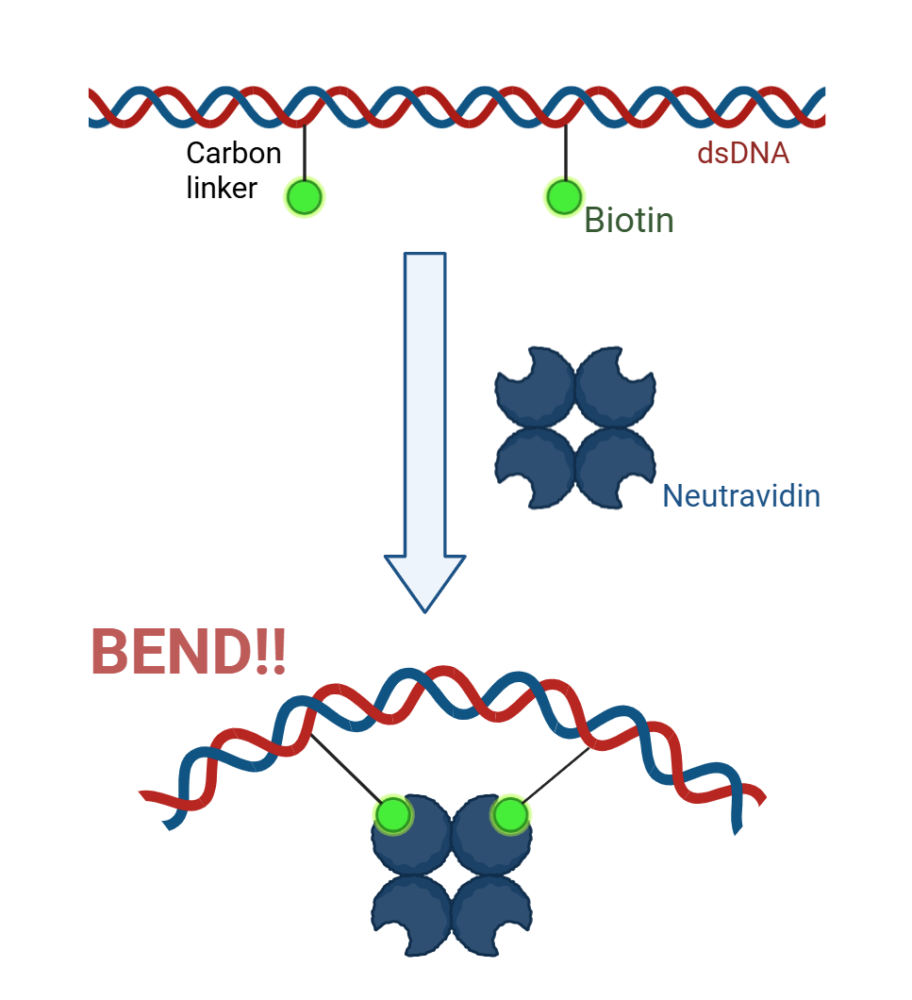

Introduction
DNA origami technology enables the creation of nanoscale structures by folding DNA into designed shapes through the combination of circular DNA and numerous short single-stranded DNA (ssDNA) molecules [1]. This technology has opened new possibilities in nanodevices [2], molecular computing [3], and synthetic biology [4].
Current techniques for flexibly bending DNA include the following. The first utilizes ssDNA modifications[5]. The second relies on modules that undergo slight changes in response to potassium ion concentration, with these cumulative changes inducing curvature [6].
However, ssDNA-based methods maintain curved structures through hybridization, making them susceptible to structural disruption by environmental factors like pH or temperature. Furthermore, complementary ssDNA must be designed and incorporated, and the modification itself can sometimes introduce distortions in the DNA origami,often leading to issues with low stability and complex design requirements.
Additionally, methods relying on ion concentration require the presence of potassium ions in the environment. Consequently, they face the problem that curved structures cannot be maintained in environments lacking potassium ions.
To overcome these limitations, we focused on the highly stable and specific avidin-biotin interaction.
This approach enables stable maintenance of curved structures through relatively simple biotin modification.
This technique provides a tool for constructing durable DNA origami structures independent of environmental conditions like ion concentration.
[1] P. W. K. Rothemund, Nature, 440, 297–302 (2006)
[2]C. Zhao, X. Jiang, M. Wang, S. Gui, X. Yan, Y. Dong, D. Liu, Nanoscale, 17, 142–157 (2025)
[3]Q. Zhang, M. Li, Y. Tang, J. Zhang, C. Sun, Y. Hao, J. Cheng, X. Xie, S. Jia, H. Lv, F. Wang, C. Fan, ACS Cent. Sci., 10, 2285–2293 (2024)
[4]W. Wang, P. R. Hayes, X. Ren, R. E. Taylor, Nano Lett., 23, 7076–7085 (2023).
[5]J. Funke, H. Dietz, Nature Nanotech, 11, 47–52 (2016)
[6]Suzuki, Y. et al., Angew. Chem. Int. Ed., 59, 6230-6234 (2020)
>Design
Structure
We propose a DNA bending tool utilizing avidin-biotin binding！
|  | In this method, the DNA is first modified with biotin. When avidin is added there, an avidin-biotin complex is formed. The interaction between avidin and biotin pulls the DNA toward the avidin side. Then, like a bowstring bending, the DNA curves.
Furthermore, to facilitate the binding of biotin and avidin, the modified biotin is designed to protrude in the same orientation. When the biotin spacing is an integer turn(1 turn: 3.4 nm), introduce two biotin groups onto one strand of the dsDNA. Otherwise, introduce one biotin group onto each strand. The curvature angle can be controlled by manipulating the length of the linker and the distance between the two biotins. |
What is avidin-biotin binding ?
Avidin is a protein derived from birds and amphibians [1]. It is also a tetramer capable of binding up to four biotin molecules. It can specifically bind to biotin, and its binding interaction (Kd = 10⁻¹⁵ M) is the strongest among existing non-covalent interactions between proteins and ligands. Once the binding is formed, it is unaffected by extreme pH values, temperatures, organic solvents, or denaturing agents. Due to these characteristics, the avidin-biotin conjugate is used for detecting biotin-labeled antibodies and nucleic acids [2].There are also streptavidin and neutral avidin with higher specificity. This time, neutral avidin was used, which has the highest specificity and an isoelectric point near neutrality (pH 6.3) [3].
[1]Thermo Fisher Scientific | Avidin-Biotin Interaction | Thermo Fisher Scientific - JP. Retrieved October 10, 2025, from https://www.thermofisher.com/jp/ja/home/life-science/protein-biology/protein-biology-learning-center/protein-biology-resource-library/pierce-protein-methods/avidin-biotin-interaction.html
[2]AJ-Stage | Examination of the avidin-biotin complex (ABC) method for detecting PBIgG. Retrieved October 10, 2025, from https://www.jstage.jst.go.jp/article/kmj1951/39/3/39_3_345/_article
[3]biomat | Streptavidin and Neutravidin Biotin Binding Surfaces - Biomat. Retrieved October 10, 2025, from https://www.biomat.it/applications-techniques/biotin-binding-surfaces/#:~:text=Neutravidin%20is%20a%20deglycosylated%20avidin,a%20large%20variety%20of%20cells.